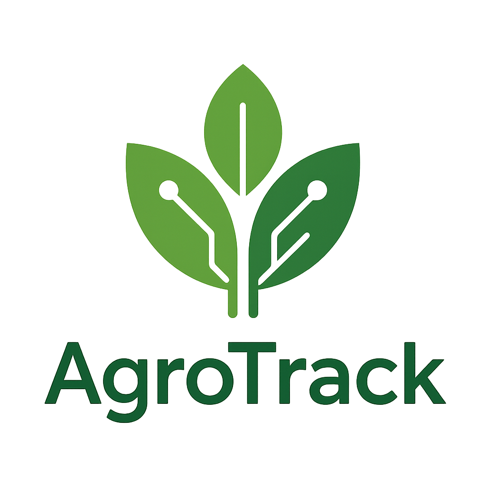

Bienvenidos al portal interno de AgroTrack
Este sitio permite al personal consultar información, enviar formularios y realizar pruebas de inicio de sesión.
Seleccione una opción del menú superior para comenzar.
Este sitio permite al personal consultar información, enviar formularios y realizar pruebas de inicio de sesión.
Seleccione una opción del menú superior para comenzar.